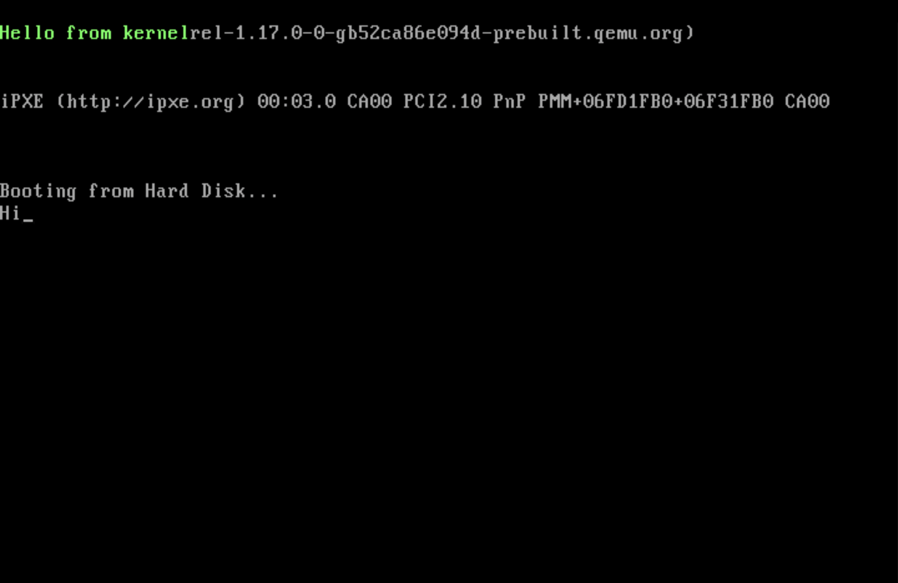

Thoughts on Stage 2 bootloader project development

Although I actually started this project more than a year ago, it was only until last week when I
revisited it.
It had been a while since I manually wrote assembly, and I had never done it that thoroughly.
I forgot how much time is spent googling what each register does and how many bits it stores.
Incase you have not seen it from the Linkedin post or through the main homepage of my website,
you can access the repo here.
I named it StellBoot just so there was something different to look at when I ls -a'd into my GitHub
folder. Originally
I thought I was going to write a whole OS from scratch and name it after my cat,
but that proved too big of a task. So I just started with StellBoot, and who knows, maybe in the
future I'll end up
going through the suffering of writing a kernel from scratch. I'm already working on other OSdev
related things.
The main reason I chose a bootloader is because I wanted to dive into the time-consuming rabit hole
of writing
assembly from scratch. When I first started the project at the end of 2025, I was taking a
university course on
computer architecture, which focused mostly on CPUs and their optimization. The exams in that class
had a lot of
assembly in them, but it was all recognition. It's easy to read x86 ASM when the program is a couple
of conditional jumps
and an index variable to simulate a for loop. However, if I want to work with CPU's in a real
professional workplace,
I'd have to learn something more than that. I won't write the step by step of how the program works
because I have done that
in the repository already, so I'll just end on a quick note.
The coolest instruction in the bootloader
For me, the best part of the bootloader was restricting everything to 512 bytes. Sure, modern programs are very memory efficient, but unless you work in aerospace or something like that, an extra byte probably won't kill anyone. At the end of the program,times 510-($-$$) db 0 fills the rest of the file with 0s for
it to
amount to exactly 512 bytes. (It's actually 510 because of the 0xAA55 directive, which is 2 bytes long,
and needs to be
at EOF for it to tell the BIOS
the
current file is a bootloader and needs to be bootable). Also, in NASM, $ stands for the
address
of the
current line being
assembled,
while $$ is the address of the section, which in this case is the file. So this instruction is a loop
of jumping back and forth (EOF - 2 bytes) and the start of the current section, filling it with zeroes.
That blew my mind at the beginning, how efficient it is. In C that would have taken much more overhead.